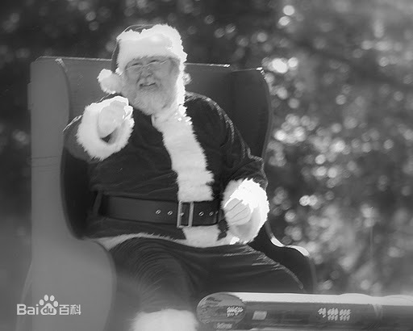

圣诞老人是不同传说和神秘人型的结合体。传说圣诞老人是在数千年前的斯堪的纳维亚半岛即出现。北欧神话中司智慧、艺术、诗词、战争的奥丁神，寒冬时节，骑上他那八脚马坐骑驰骋于天涯海角，惩恶扬善，分发礼物。与此同时，其子雷神穿红衣以闪电为武器与冰雪诸神昏天黑地恶战一场，最终战胜寒冷。据异教传说，圣诞老人为奥丁神后裔。 [4] 在德国中部和北部地区，尼古拉斯被称为“圣诞老人”，在英国被称为“圣诞父亲”，被美国的荷兰移民称为后来的“SantaClaus”。
在荷兰的传说中，圣诞老人Sintirklass还带了一个叫BlackPeter的助手，乘着一艘
船来到。他带着一本大书，书中描述了所有荷兰小孩在过去一年中的表现。表现好的小孩就送礼物给他们，不好的小孩便让他的助手(驯鹿）带走。
孩子们都想知道圣诞老人住在何处，他们何时
会收到礼物。答案通常是圣诞老人住在北极，他的作坊生产圣诞礼物。1927年被孩子们称做“Markus叔叔”的儿童节目主持人MarkusRautio第一次透露：圣诞老人生活在拉普兰的Korvatunturi。
位于芬兰东部边境地区的Korvatunturi发现了一只
类似于野兔的耳朵，事实是圣诞老人的耳朵，它用来聆听孩子们的愿望。斯堪迪纳维亚的传说中讲述了圣诞老人和助手小精灵们的历史。
上世纪结束时，北半球不同关于圣诞老人的传说汇总成
同一版本——白胡子老人为孩子们发放礼物，之后返回芬兰拉普兰的Kornatunturi。
圣诞老人
圣诞老人
1950年开始，圣诞老人快乐地逗留在napapiiri,除了圣诞节还要和孩子们及年轻人进行沟通。越来越多的人定期拜访圣诞老人，1985年，他建立了自己的工作室，每天圣诞老人都来办公室倾听孩子们的圣诞祝愿并和他们沟通交流。圣诞老人村是圣诞老人的主要邮局，它接收全世界孩子们发给圣诞老人的信件。
